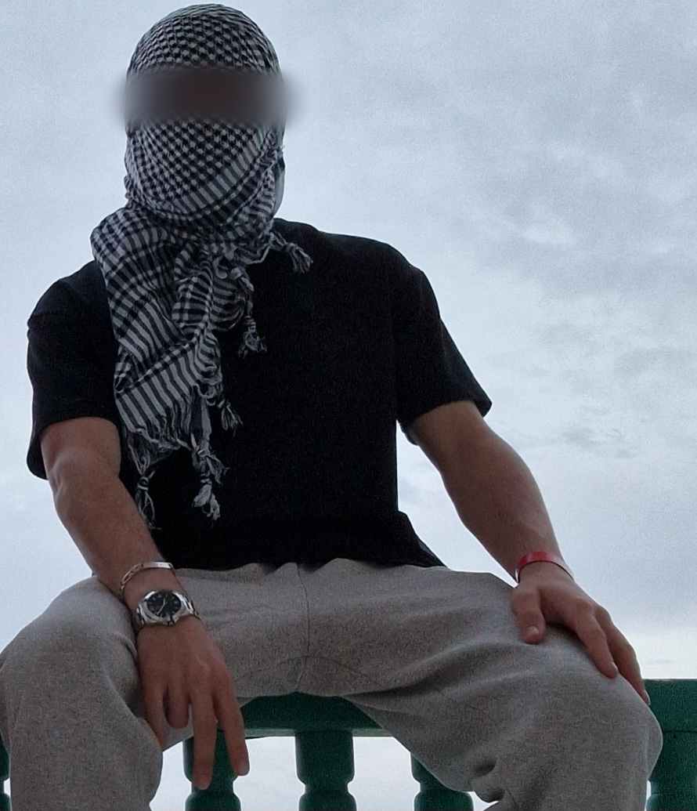
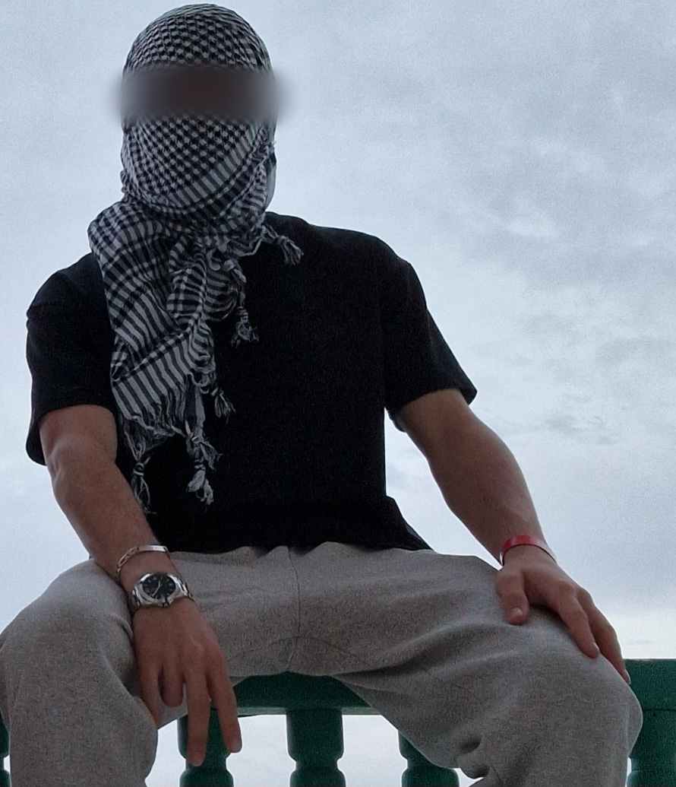

Ceci sera une page pour te permettre de me retrouver au cas où
Aujourd'hui, je vais te donner quelques outils qui te permettront de me retrouver, si besoin.
Alors voilà :
arghhzbi
lka_sw
Ici, je vais placer un texte,
qui ne sera visible que a la fin du conte-à-rebour,
peut importe se qu'il se passe ma fille :)
🎉 Aleyna, ma fille, j'écris se texte, on est actuellement le 25.05.2025,
normalement, si tu vois se texte au moment ou il est dévoilé, cela devrais faire plus de 8 mois que nous sommes ensemble,
(finalement non, j'ai réduit le temps, pour que tu puisse le voir apres qu'on se sois vu normalement :) )
si c'est le cas, on a fais du chemin ensemble, et j'espère qu'on est toujours se qu'on était, se 8 Mars 2025.
J'aimerai te dire que je t'aime de tant de manière différente.
J'espère qu'à se jour, tu conte toujours me laisser faire de toi ma femme,
car je le désire plus que tout.
Et que tant que tu continuera à faire des efforts pour nous et a être présente,
je serais toujours là, près de toi.
J'espère que j'ai pu t'offrir se que je voulais,
mon parfum, la peluche faite de rose, les petites photo de mon imprimante mdr, le collier avec mon odeur,
mais surtout, la rose blanche, que j'ai déjà regardé où te l'acheter, quand tu viendras :)
Si tu m'a pas dis de bêtises, on devrais se voir très bientôt.
Ryaaaa comment j'ai hâte zbi.
Des fois je fais des erreurs, et j'en suis désolé, mais pour autant je m'efforce de devenir meilleur pour toi
et de ne pas faire plusieurs fois la même erreur.
De ton côté, j'espère tu fais tout pour que sa marche,
en fonctionnant comme sa, on ira où on veut aller ensemble.
Au moment ou j'écrit sa, on s'est un peu disputé, mais tu vois,
je pense quand même a toi ma ptite leyley, même si vraiment defois tu me fou le démon w'Allah.
Enfin bref, je t'aime quand même ma petite fille d'amour.
 
